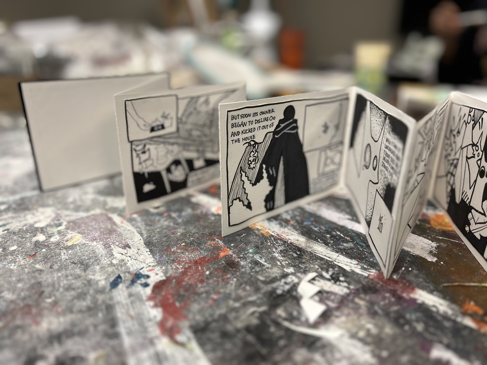
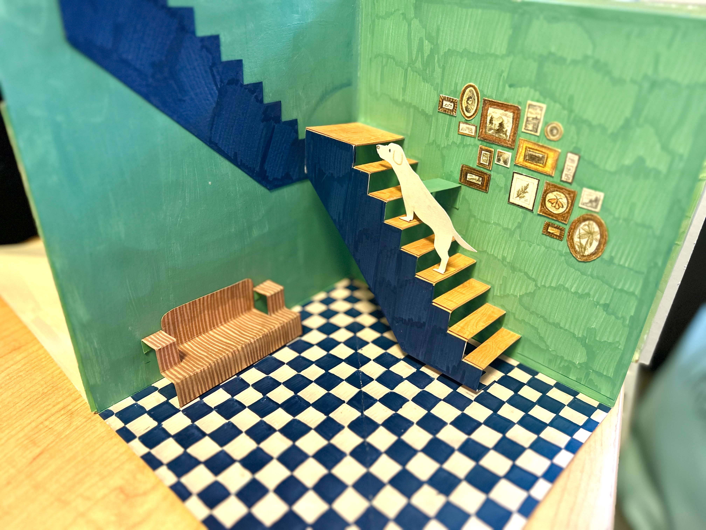

What if?
An accordion comic book I made. It tells a story about a little animal and its owner and its time travel experience.

Location/Dislocation
This project is about "home". The location in this pop up book is "wherever my dogs are". I creation four different spaces in this book.

Self portrait
It's a collection a self portraits. They are from the present, past and future.
Human Cow
It's a short film I made with AI. It's about dairy cow cruelty. I imagined a dystopia where humans turns into cows after they drank milk.